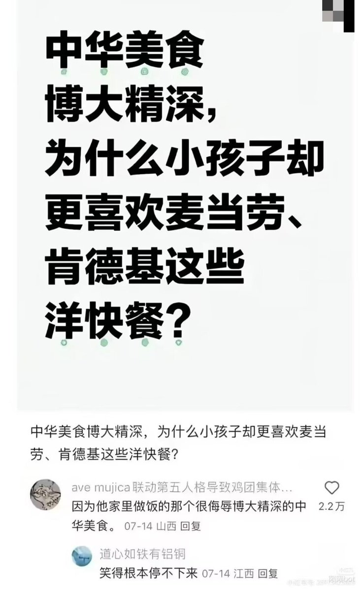

サイバー環状線
@CyberKanjousen
其实并不一定是厨艺问题，而是洋快餐更「简单」。
中餐需要用筷子之类的餐具，吃到嘴里有时颇费一些功夫，尤其是还不太熟练使用餐具的小孩子；而肯德基这些则不然，汉堡薯条鸡米花什么的用手抓就可以了，简简单单。
另外，肯德基、麦当劳这些快餐店的厨房环境比绝大多数家庭和小饭馆都要好。当然这并 不是小孩喜欢洋快餐的原因，而是環状線把肯德基当早饭和午饭和 0.5 顿晚饭的原因。
